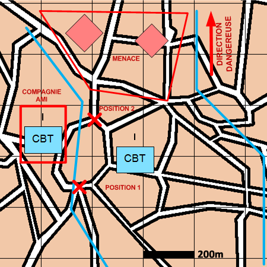

NIVEAU : Automate
ARME : Melee
MISSION : Flanc-Garder
NIVEAU : Automate
ARME : Melee
MISSION : Flanc-Garder
Schéma de modélisationFlanc Garder |
Paramètres obligatoiresFuseauZone de responsabilité. Direction Dangereuse Orientation privilégiée des capteurs. Positions Positions depuis lesquelles flanc-garder. Menace Zone ou position vers laquelle concentrer l'effort. Compagnie La compagnie à flanc-garder. |
|
Paramètres optionnelsLigne de début et fin de mission [LDM/LFM] |
||
 |
Fiches missions |  |